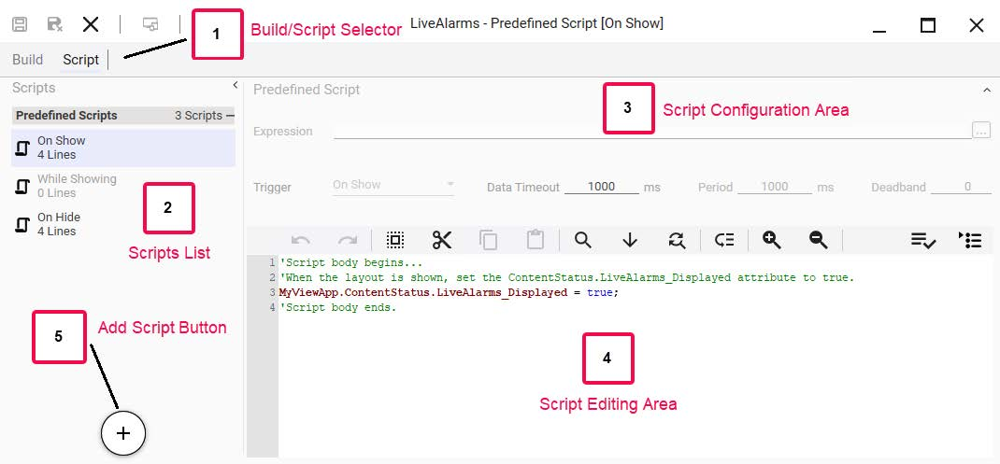
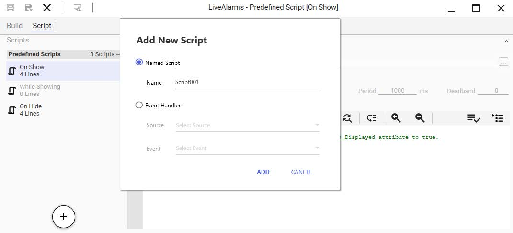
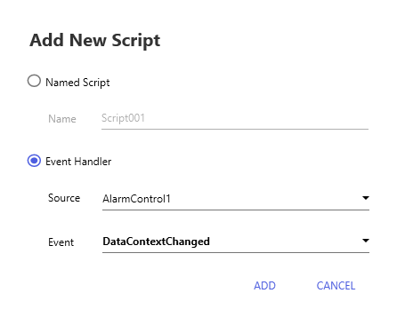
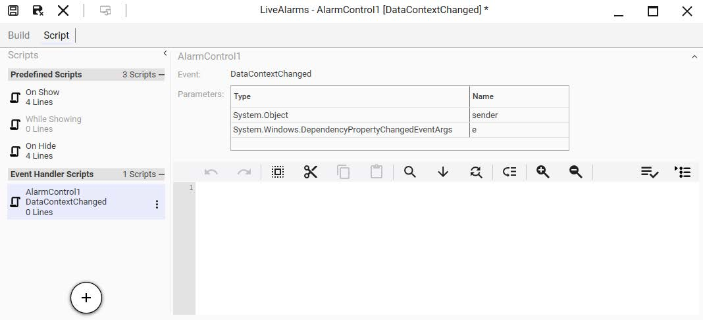

Module 13 — Scripting in Graphics | Pages 705-712

Page 13-21, Section 3 – Layout Scripts.
• Gray Intro Box: "This section describes predefined and named layout scripts, including triggers and the Event Handler."
• Introduction: Layout scripts customize runtime behavior, run after symbol scripts, triggered by PropertyChange, MouseDown events
• Layout Editor - Script Page: Interface for adding/editing layout scripts
• Screenshot - Annotated Layout Editor:
1. Build/Script Selector: Toggle between Build (design) and Script (editing) tabs
2. Scripts List: On Show (4 Lines), While Showing (0 Lines), On Hide (4 Lines)
3. Script Configuration Area: Expression, Trigger=On Show, Data Timeout=1000ms, Period=1000ms, Deadband
4. Script Editing Area: Code with autocomplete, toolbar (undo/redo, cut, duplicate, zoom, find, formatting)
5. Add Script Button: "+" button at bottom of Scripts List
• Footer: AVEVA™ Operations Management Interface 2023]
Section 3 – Layout Scripts
Section 3 – Layout Scripts
Introduction
You can customize runtime behavior for layouts and layout content with layout scripts. Layout
scripts work much like symbol scripts that can be added to symbols to enable animations for the
symbol or its elements. Layout scripts are executed after any symbol scripts contained within
symbols in the layout. You can also add scripts triggered by events in an App or control, such as
PropertyChange, MouseDown, and so on.
Layout Editor - Script Page
The Layout Editor provides an interface for adding and editing layout scripts for execution at
runtime. You can add different triggers, such as opening or closing the layout or setting an interval
at which the script executes while the layout is open.
(1) Build/Script Selector: Switches between the Build and Script pages of the Layout
Editor. Refer to Module 2 for more information about the Build page.
(2) Scripts List: A list of all scripts in the layout. Includes three built-in scripts for On
Show, While Showing, and On Hide, as well as any named and event handler scripts
added to the layout.
(3) Script Configuration Area: This area provides fields for entering an expression and
script trigger type, as well as other fields applicable to the selected trigger.
(4) Script Editing Area: The editing area is for entering lines of code for the script. It
supports autocomplete, so that as you type, the editor presents a drop-down list of
namespaces, attributes, custom properties, and other items that match the characters you
entered, and you can select from the drop-down list. Items in the drop-down lists are
filtered by context, so that only valid items are listed. Buttons at the top of this area provide
editing functions, such as undo and redo, cut, duplicate, and other editor functions.
(5) Add Script Button: Click to display the Add New Script dialog box, from which you
can specify adding a named script or an event handler script.
This section describes predefined and named layout scripts, including script triggers and the
Event Handler.
Page 13-22, Types of Layout Scripts and Triggers.
• Built-In Scripts (3 types):
• On Show: Runs once when layout opens, configurable timeout
• While Showing: Runs at specified interval while layout open
• On Hide: Runs once when layout closes, no configurable parameters
• Note: Max 1 of each type per layout (3 total)
• Named Scripts (5 types):
• While True: Runs periodically while expression is true
• While False: Runs periodically while expression is false
• On True: Runs once on false→true transition
• On False: Runs once on true→false transition
• Data Changed: Runs when data changes, configurable deadband and quality changes
• Event Handler Scripts:
• Can be added for Apps/controls with public events
• Examples: Got Focus, Mouse Move, Mouse Double Click, Drag Over, Drop, Key Up, Context Menu Opening
• Footer: AVEVA™ Training]
Types of Layout Scripts and Triggers
You can use built-in scripts, named scripts, and event handler scripts for your layouts. The
following sections describe the types of layout scripts and applicable triggers.
Built-In Scripts
There are three built-in scripts that are automatically added to all layouts. These are listed in the
Script tab and are always shown, whether or not they have been configured. The three built-in
scripts are:
On Show: The script runs one time when the layout opens. You can specify a timeout
period for the script in milliseconds to stop the script if a referenced attribute cannot be
accessed.
While Showing: The script runs at a specified interval (in milliseconds) while the layout is
open.
On Hide: The script runs one time when the layout closes. There are no configurable
trigger parameters.
You can have only one built-in script of each type, for a maximum of three built-in scripts, per
layout.
Named Scripts
You can add named layout scripts that are triggered by an expression or reference. The
expression or reference is used to define the specified condition. There is no limit on how many
expression-based scripts that you can include in a layout.
While True: The script runs periodically, at a specified interval (in milliseconds), for as
long as the expression remains true.
While False: The script runs periodically, at a specified interval (in milliseconds), for as
long as the expression remains false.
On True: The script runs one time when the expression transitions to true.
On False: The script runs one time when the expression transitions to false.
Data Changed: The script runs whenever data referenced by the expression changes.
You can specify a dead band to filter out inconsequential data changes. In addition, you
can specify if quality changes will also be used to trigger the script to run.
Event Handler Scripts
Event handler scripts can be added and configured for Apps and controls in the layout that contain
public events. There are numerous types of events that can be scripted, and the events will be
different between Apps. Some examples of the types of events that can be scripted include:
Got Focus
Mouse Move
Mouse Double Click
Drag Over
Drop
Key Up
Context Menu Opening


Page 13-23, Section 3 – Layout Scripts.
• Section Title: "Add an Event Handler Script"
• Text: Can only add event handler scripts after adding an App/control with public events
• Screenshot 1 - Add New Script Dialog (Named Script):
• Radio buttons: Named Script (selected), Event Handler (greyed out)
• Name field: Script001
• Source, Event fields greyed out
• Bottom: ADD, CANCEL buttons
• Red arrow pointing to + Add Script button at bottom of Scripts panel
• Screenshot 2 - Add New Script Dialog (Event Handler):
• Radio button: Event Handler (selected)
• Named Script disabled
• Source: dropdown = AlarmControl1
• Event: dropdown = DataContextChanged
• Bottom: ADD, CANCEL buttons
• Footer: AVEVA™ Operations Management Interface 2023]
Section 3 – Layout Scripts
Add an Event Handler Script
You can add event handler scripts to a layout if you have already added an App or control to a
pane within the layout that contains public events.
For example, to add an event handler script from the Script page, click the Add Script button to
display the Add New Script dialog box.
Check the Event Handler option, and then select the source App or control and an event. The
following shows the Source as AlarmControl1 and the Event as DataContextChanged.

Page 13-24, Module 13 – Scripting in Graphics.
• Text: Click ADD to add script to Event Handler Scripts list, then edit in right panel
• Screenshot - Script Editor:
• Title: LiveAlarms - AlarmControl1 [DataContextChanged]
• Tabs: Build, Script (active)
• Left: Predefined Scripts, Event Handler Scripts > AlarmControl1DataContextChanged (1 Script), red arrow on + button
• Right: Parameters table:
• System.Object → sender
• System.Windows.DependencyPropertyChangedEventArgs → e
• Toolbar: save, cut, copy, paste, find icons
• Script text area (blank)
• Alternative Method: Can add from Properties tab on Build page, then switch to Script page
• Namespaces for Layout Scripts:
• MyContent: Local to each layout
• ViewApp: Global across Galaxy
• Event-Handler Scripts: Use control name (e.g., AlarmControl1) instead of MyContent
• Footer: AVEVA™ Training]
Then click ADD. The script is added to the list of Event Handler Scripts on the left side of the Script
page as shown below, and you can enter the script in the script editing area on the right.
You can also add an event handler script from the Properties tab on the Layout Editor’s Build
page, and then switch to the Script page to configure the script.
Namespaces for Use in Layout Scripts
Layout scripts can leverage both local and global namespaces, including the MyContent
namespace, which is local to each individual layout, and ViewApp namespaces, which are global
across the Galaxy. The MyContent namespace can be referenced by layout scripts and
expressions used within that layout. This provides the ability to isolate attributes within an
individual layout, as opposed to the ViewApp namespace, which can be referenced by all layouts
and ViewApps in the Galaxy.
Event-handler scripts, unlike named and built-in scripts, do not require the use of the MyContent
namespace when scripting content properties and methods. To script a property or method, start
by entering the name of the control instead of "MyContent." The autocomplete function will allow
you to see the properties and methods contained in the control as you type.
Page 13-25, Section 4 – Graphic Client Functions.
• Introduction: Covers ShowContent(), HideContent(), ShowGraphic(), HideGraphic(), HideSelf() functions
• ShowContent() Function:
• Purpose: Load symbol, layout, or external content into a layout pane
• Syntax:
Dim contentInfo as aaContent.ContentInfo;
contentInfo.Content = "<ContentName>";
ShowContent(contentInfo);
• Property Reference Table:
| Property | Description | Data Type |
|---|---|---|
| Content | Required: Unique name of content to load | String |
| ScreenName | Optional: Target screen | String |
| PaneName | Optional: Target pane | String |
| ContentType | Optional: Override default content type | String |
| SearchScope | Optional: AllScreens, SourceScreen, PrimaryScreen | Enum |
• Footer: AVEVA™ Operations Management Interface 2023]
Section 4 – Graphic Client Functions
Section 4 – Graphic Client Functions
Introduction
Graphic client functions include several methods to show and hide content, open and close
content in popup windows, log in and log off users, or query custom properties contained in a
symbol. You can use these methods within scripts for industrial graphics.
ShowContent() Function
The ShowContent() function loads a symbol, a layout, or an external content item into an
Operations Management Interface layout pane.
The syntax for the ShowContent() function is as follows:
Dim contentInfo as aaContent.ContentInfo;
contentInfo.Content = "
ShowContent(contentInfo);
where contentInfo is a predefined structure that specifies the content to be loaded as described
below:
This section explains the ShowContent(), Hide Content(), ShowGraphic(), HideGraphic(), and
HideSelf() script functions.
Property
Description
Data Type
Content
(Required) Unique name that specifies the content to be
loaded. Can be a symbol, a layout, or an external content
item. Can be specified as a relative reference, such as
Me.S1.
String
ScreenName
(Optional) Specifies the screen that contains a pane in which
to place the content.
String
PaneName
(Optional) Specifies the pane in which to place the content.
String
ContentType
(Optional) Overrides the content type of the Content. If the
ContentType property is not specified, the content type
specified for the Content is used.
String
SearchScope
(Optional) When ScreenName is not specified, SearchScope
specifies which screen(s) are searched for a pane that
matches the specified PaneName or content type. Can be
specified as AllScreens to search all screens; SourceScreen
to search only the screen from which ShowContent() is called;
or PrimaryScreen to search only the primary screen of the
screen profile.
If SearchScope is not specified and ShowContent() is called
from an embedded layout, ShowContent() will search locally
for a matching pane within the embedded layout. If
SearchScope or ScreenName is specified, ShowContent()
will search for a pane globally. It uses the SearchScope
setting to determine which screens within the screen profile
are searched.
Enum
Page 13-26, Module 13 – Scripting in Graphics.
• Additional Properties Table:
| Property | Description | Data Type |
|---|---|---|
| PropertyOverrides | Optional: Custom property overrides (name + value pairs) | PropertyOverrideValuePair[] Array |
| OwningObject | Optional: Owning parent object for loaded content | String |
• ShowContent() Code Example:
dim contentInfo as aaContent.ContentInfo;
Dim cpValues [2] as aaContent.PropertyOverrideValue;
cpValues[1] = new aaContent.PropertyOverrideValue("CP1", "20", true);
cpValues[2] = new aaContent.PropertyOverrideValue("CP2", "Pump.PV.TagName",false);
contentInfo.Content = "S1";
contentInfo.ContentType = "Overview";
contentInfo.OwningObject = "Enterprise";
contentInfo.PaneName = "Panel";
contentInfo.ScreenName = "Wall";
contentInfo.PropertyOverrideValues = cpValues;
contentInfo.SearchScope = aaContent.SearchScope.PrimaryScreen;
ShowContent ( contentInfo );
• HideContent() Function:
• Purpose: Close one or more matching content items within a ViewApp
• Syntax:
Dim contentInfo as aaContent.ContentInfo;
contentInfo.Content = "<ContentName>";
HideContent( contentInfo );
• Properties:
| Property | Description | Data Type |
|---|---|---|
| Content | Optional: Unique name - closes ALL instances with this name | String |
| Name | Optional: Unique auto-generated name - closes single instance only | String |
• Footer: AVEVA™ Training
Analysis complete for all pages 667-710.]
For example:
dim contentInfo as aaContent.ContentInfo;
Dim cpValues [2] as aaContent.PropertyOverrideValue;
cpValues[1] = new aaContent.PropertyOverrideValue("CP1", "20", true);
cpValues[2] = new aaContent.PropertyOverrideValue("CP2", "Pump.PV.TagName",
false);
contentInfo.Content = "S1";
contentInfo.ContentType = "Overview";
contentInfo.OwningObject = "Enterprise";
contentInfo.PaneName = "Pane1";
contentInfo.ScreenName = "Wall";
contentInfo.PropertyOverrideValues = cpValues;
contentInfo.SearchScope = aaContent.SearchScope.PrimaryScreen;
ShowContent ( contentInfo );
HideContent() Function
The HideContent() function closes one or more matching content items within a ViewApp. Multiple
content items can be closed if they match the parameters specified in the HideContent call. The
HideContent() function uses a subset of the parameters that ShowContent() uses.
The syntax for the HideContent() function is as follows:
Dim contentInfo as aaContent.ContentInfo;
contentInfo.Content = "
HideContent( contentInfo );
where contentinfo is a predefined structure that specifies the content to be closed as described
below:
PropertyOverrides
(Optional) Sets custom property overrides if a symbol has
been specified by the Content property. Each override must
include the custom property name and override value.
Property Override
ValuePair[] Array
OwningObject
(Optional) Sets the owning object of the content shown by the
ShowContent() function. Can be a concatenation of constant
strings and reference strings.
String
Property
Description
Data Type
Property
Description
Data Type
Content
(Optional) A unique name for an item, either in the Graphics tab or
associated with an asset, that specifies the content to be loaded into
the pane. Content can be a symbol, a layout, or external content.
Content names are the names shown in the Graphics tab or relative
names of the content in an object.
When Content is specified, the HideContent() method will close all
content with the same name. To hide a single instance of a content
item in the layout, use the Name property instead.
String
Name
(Optional) The auto-generated (or user-edited) name of a unique
content item. The name is created when the content item is added to a
layout pane. Note that the content Name property is shown in the
Properties tab of the Layout Editor, and is auto-generated from the
Content property, which is also shown in the Properties tab. Name of
the content is editable.
When Name is specified, the HideContent() method will only close the
uniquely-named content in the layout.
String
Section 4 – Graphic Client Functions
When ContentInfo does not define any properties in the HideContent call, the content (symbol or
layout) from which this method is called will be closed. In this case, it works identically to the
HideSelf() method.
For example:
Dim contentInfo as aaContent.ContentInfo;
contentInfo.Content = "SA_Valve_2Way";
contentInfo.Name = "SA_Valve_2Way1";
contentInfo.ContentType = "Level_3";
contentInfo.PaneName = "Pane2";
contentInfo.ScreenName = "Primary";
contentInfo.SearchScope = aaContent.SearchScope.Self;
HideContent( contentInfo );
ShowGraphic() Function
The ShowGraphic() function allows you to write graphic scripts to display content in a pop-up
window.
The ShowGraphic() function uses the name of the symbol, layout, or external content item as a
parameter. You must ensure that the content exists in the Galaxy.
The syntax for the ShowGraphic() function is as follows:
Dim graphicInfo as aaGraphic.GraphicInfo;
graphicInfo.Identity = "
graphicInfo.GraphicName = "
ShowGraphic( graphicInfo );
The ShowGraphic() function is in addition to the Show Symbol animation feature, which allows you
to display a symbol as a pop-up window through an animation. You can use either a Show Symbol
animation or the ShowGraphic() function. Like the Show Symbol animation feature, you can
control the properties of the symbol through the ShowGraphic() function in scripting.
You can configure the show graphic script to specify:
Which graphic will appear as the pop-up window or appear in a pane
Whether the window will have a title bar
The initial position of the pop-up window
Whether the window can be resized
Whether the window type will be modal or modeless
The relative position of the pop-up window
Passing the owning object to the symbol to display
Values of the custom properties of the symbol
ScreenName
(Optional) Specifies the screen that contains the pane with the content
to be closed.
String
PaneName
(Optional) Specifies the pane containing the content to be closed.
String
ContentType
(Optional) Specifies the content type of the content to be closed, for
example “Overview,” “Navigation,” or “Faceplate.”
String
SearchScope
(Optional) When ScreenName is not specified, SearchScope specifies
which screen or screens to search for a pane that matches the
specified PaneName or content type. The default SearchScope is
“Self.”
Enum
Property
Description
Data Type
HideGraphic() Function
You can also include a script that contains the HideGraphic() function. The HideGraphic() function
allows the closing of a graphic displayed through the ShowGraphic() function.
The syntax for the HideGraphic() function is as follows:
HideGraphic(string identity);
HideSelf() Function
The HideSelf() function can be used to close the displayed graphic itself when it is shown in the
running ViewApp.
The syntax for the HideSelf() function is as follows:
HideSelf();
Review the key concepts section above for the core topics discussed.
Consider how the concepts in this lesson fit into the broader System Platform and OMI framework.